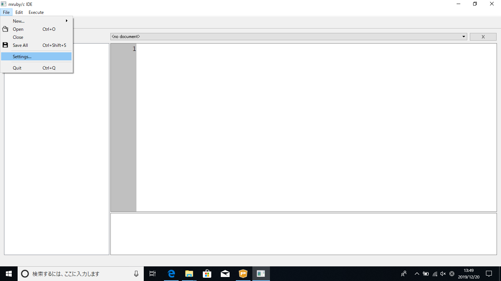
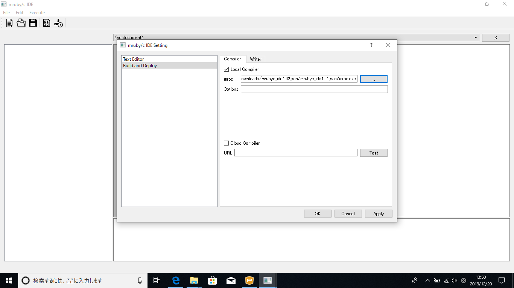
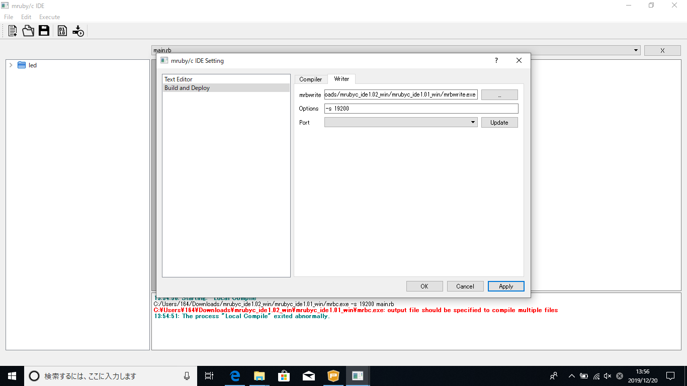
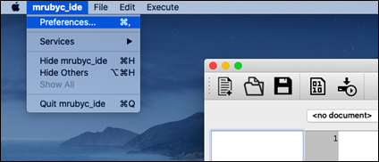
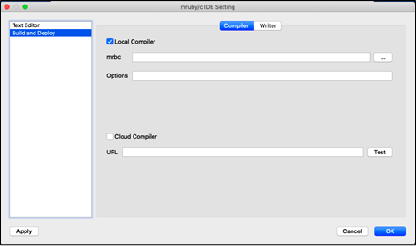
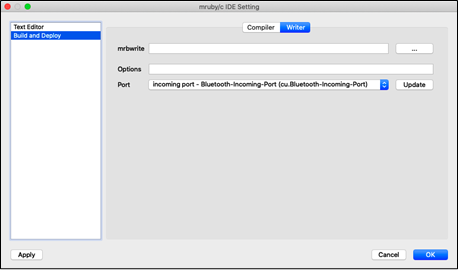
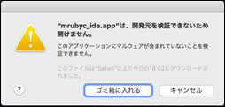
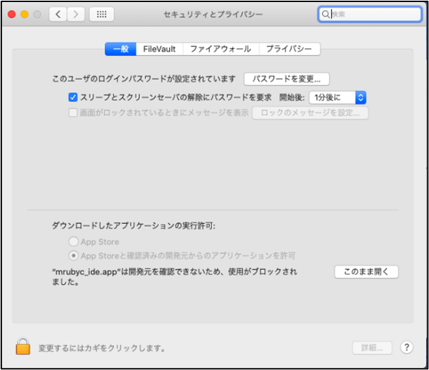
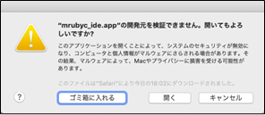

Windows10
- mruby/c IDEをダウンロード後、解凍
- mruby/c IDEの解凍したフォルダのmrubyc_ide.exeを起動
- 上部タブの「File -> Settings...」をクリック 
- 「Build and Deploy -> Cmpiler」の「mrbc」項目に解凍したフォルダ内にある「mrbc.exe」のpathを指定 
- 「Build and Deploy -> Writer」の「mrbwrite」項目に解凍したフォルダ内にある「mrbwrite.exe」のpathを指定
- 「Build and Deploy -> Writer」の「Options」項目に「-s 19200」と書き込み、「Apply」、「OK」をクリック 
インストール動画
MAC
- mruby/c IDEをダウンロード後、解凍
- 展開したディレクトリ内の「mrubyc_ide」をダブルクリックしてIDEを起動します。 その際に以下のメッセージが表示される場合があります。この場合は「キャンセル」をクリックして、メッセージを閉じます。
- メニューバーの「mrubyc_ide」＞「Preferences（環境設定）」をクリックします。 
- 設定画面の左側「Build and Deploy」を選択して「Compiler」画面に切り替えます。Local Compilerにチェックを入れた状態で「mrbc」欄にIDEと同じディレクトリ内のmrbcファイルを指定します。 
- 続いて、画面上部の「Writer」タブを選択して「Writer」画面に切り替えます。「mrbwrite」欄 IDEと同じディレクトリ内のmrbwriteファイルを指定します。「Options」欄 -s 19200 と入力します。 

続けて「システム環境設定」を起動し「セキュリティとプライバシー」を開きます。

「このまま開く」をクリックします。
以下のメッセージが表示された場合は「開く」をクリックしてIDEを起動します。

指定した後に画面左下の「Apply」をクリックします。
指定した後に画面左下の「Apply」をクリックします。最後はOKをクリックします。
Port欄はRBoardを接続した状態で設定します。RBoardを接続して「Update」をクリックし、リスト内の「USB-I2C/UART」と記載のいずれかのポートを選択します。
指定した後に画面左下の「Apply」をクリックします。最後はOKをクリックします。

{kind=link}
{kind=link}
{kind=link}
{kind=link}
{kind=link}
{kind=link}
{kind=link}
{kind=link}
{kind=link}
{kind=link}